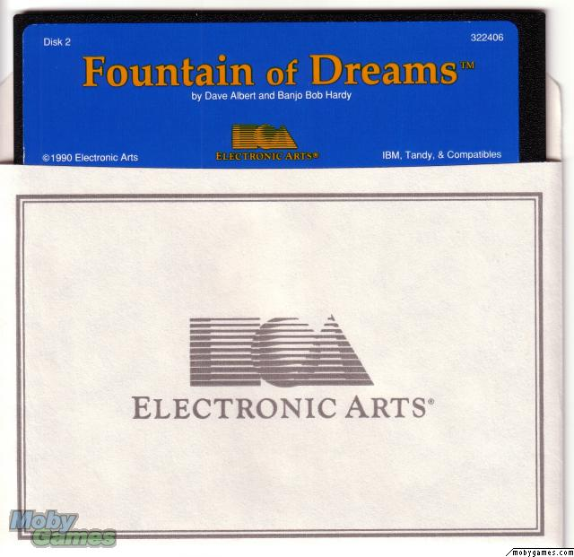

This document is about a little known game from 1990 called Fountain of Dreams.
The only known platform is DOS
The game came on two 5.25" floppy disks. Pictured below:
Disk 1 contained the following files:
110114 1990-04-16 12:18 F1.PAK 242262 1990-04-16 12:19 F1.RAW 7241 1990-03-30 16:05 INSTALL.EXE
Disk 2 contained the following files:
62694 1990-04-16 12:19 F2.PAK 297081 1990-04-16 12:19 F2.RAW
The installer is completely self contained inside INSTALL.EXE. It esentially unpacks the PAK and RAW files to the install drive. I spent some time reverse engineering INSTALL.EXE to see how it worked. The files F1.RAW and F2.RAW are not compressed while the F1.PAK and F2.PAK are compressed. The compression seems to be based on LZ77/LZW.
The F1.PAK file contains in this order:
0: disk1 1: disk3 2: disk4 3: fod.exe 4: keh.exe 5: globals 6: hdspct 7: weapons 8: packets 9: archtype A: services B: font C: borders D: disk2 E: kmap
The F1.RAW file contains in this order:
0: tiles 1: gani 2: tpict 3: kscr 4: kani 5: kpict 6: disk3 7: fpict 8: epict 9: disk4 A: dpict
The F2.PAK file contains the following files:
0: fmap 1: dmap
The F2.RAW file contains the following files:
0: fscr 1: fani 2: dani 3: dscr